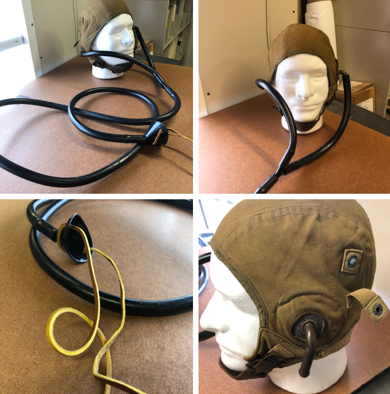
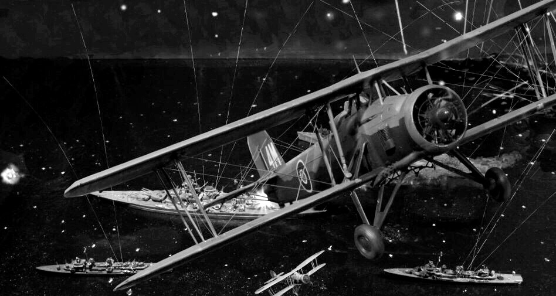
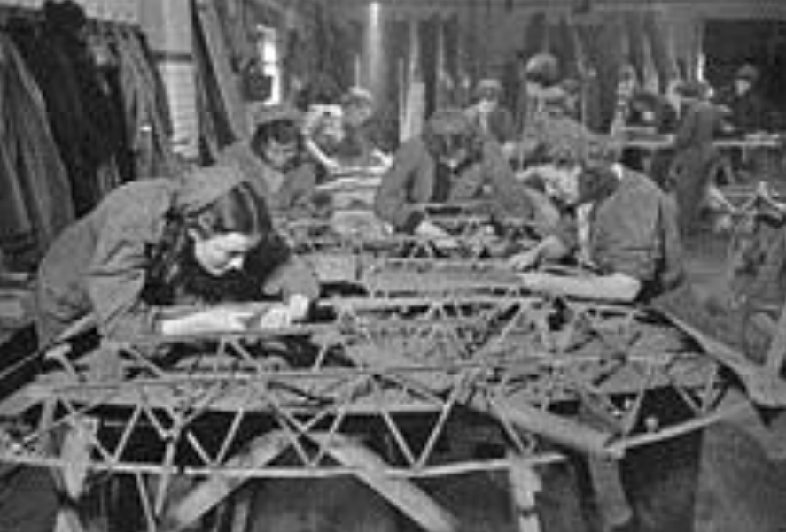
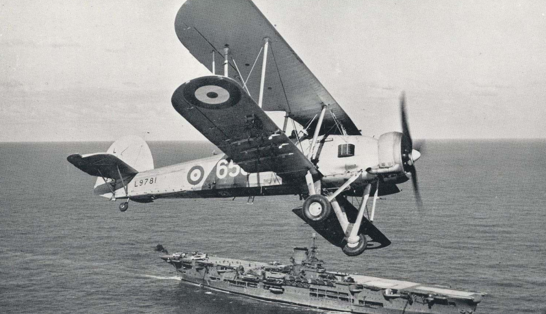
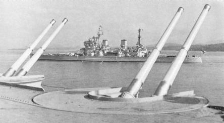
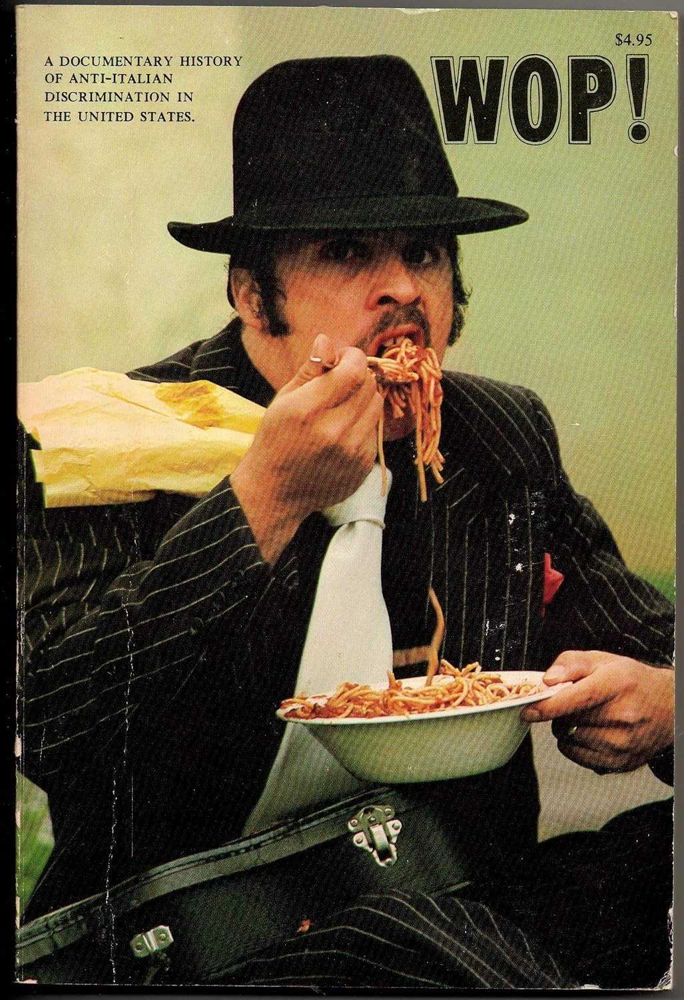

WW2 중 항모에서의 야간 작전 (24) - 사격중지, 아군이다!
게시: 2025-07-31T06:30:37+09:00
<다들 죽은 거야?> 소드피쉬 12대로 구성된 제1차 공격대의 어뢰 및 폭탄 공격은 딱 23분간 진행됨. 조명탄 투하조로서 가장 먼저 타란토에 돌진했던 램 중령에게는 아무도 대공포를 쏘지 않았으므로 상대적으로 매우 안전한 임무 비행을 수행했는데, 조명탄을 투하하고 이어서 4발의 250파운드짜리 폭탄을 유류 저장고에 투하한 뒤에도 조명탄이 남아서, 이제 더 필요하진 않았지만 그래도 남은 조명탄을 모함으로 돌아가는 길에 모두 투하. 이탈리아 대공포가 쓸데없이 조명탄에 대고 불을 뿜는다는 것을 알았기 때문에, 이탈리아군의 탄약과 아드레날린을 소진시키고자 했던 것. 실제로 이탈리아 대공포들은 소드피쉬들이 공격을 마치고 사라진 뒤에도 최소한 10분 동안 하늘에 대고 죽어라 불을 뿜었음. 결국 적기가 보이건 안 보이건 닥치는 대로 쏘았다는 이야기. 그래서 그 형형색색의 예광탄이 빗발치던 이탈리아 대공포 탄막은 적어도 보기에는 무시무시했음. 이제 항모 HMS Illustrious로 돌아가는 램 중령의 마음은 무거웠음. 어둠 속이긴 하지만, 사방을 둘러보니 타란토에서 빠져나오는 소드피쉬는 자신과 Grieve 대위가 탄 소드피쉬 1대 뿐이었기 때문. 다른 소드피쉬들은 대공포에 맞아 다 격추된 것으로 보였음. 그 생각으로 우울해하던 램 중령은 갑자기 새로운 걱정거리가 떠올라 고스포트 튜브(Gosport tube)를 통해 뒷좌석에 앉은 항법사 그리브에게 이렇게 물었음.

(고스포트 튜브란 1917년 개발된 일종의 청진기 같은 고무관 인터폰. 고스포트라는 군인이 개발했을 것 같지만 실은 Robert Smith-Barry라는 민간 비행학교 교관이 비행 중 훈련생에게 지시를 잘 전달하기 위해 개발한 것인데, 그 민간 비행학교가 있던 동네가 Gosport.) "높으신 양반들(all the top brass)은 작전이 어떻게 돌아갔는지, 공격이 성공한 것인지, 몇 방이나 명중시켰는지 등등을 알고 싶어할 텐데, 우리가 유일한 생존자라면 우리에게 그걸 물을 걸세. 솔까말, 난 항구를 뒤덮은 대공포화(flak) 말고는 아무 것도 못 봤어. 자넨 Kemp와 그 일당들이 뭐든 명중시키는 거 봤나?" 그에 대한 그리브 대위의 답변. "항구에서 있었던 시간의 절반 정도는 중령님이 비행기를 미친 놈처럼 흔들어대는 바람에, 제가 옆을 내다 보려고 할 때마다 측풍이 제 고글을 거의 벗겨낼 뻔 했지 말입니다! 항구는 대공포화(ack-ack)로 완전히 덮혀 있어서 저는 우리가 지금 어느 방향으로 가는 건지 나침반을 보고서야 알 정도였슴다!" 그러나 실제로는 이 제1차 공격대에서 상실된 것은 윌리엄슨과 스칼렛의 편대장기 하나 뿐이었고 나머지는 모두 무사히 빠져나와 항모와의 접선 지점으로 비행 중이었음. 그나마 윌리엄슨과 스칼렛도 큰 부상없이 빠져나와 이탈리아군의 포로가 됨.

<순탄치 않은 제2차 공격대> 제1차 공격대가 타란토에 돌격을 개시하여 한참 대공포의 불꽃놀이가 펼쳐지고 있던 23시 10분, 약 110km 떨어진 지점 2.4km 상공에서 그 모습을 보고 있던 사람들이 있었음. 바로 일러스트리어스에서 1시간 늦게 출발한 제2차 공격대. 제2차 공격대의 눈에 갑자기 저 멀리에 초록색의 작은 원뿔이 보이기 시작했는데, 그건 제1차 공격대에게 맹목적으로 사방으로 쏘아대던 이탈리아 대공포 예광탄의 불빛. 그 주변에 반짝이는 것은 시한신관에 의해 공중 폭발하는 대공포탄. 덕분(?)에 제2차 공격대는 아직도 40여분 더 남은 비행에서 항법 문제로 걱정할 일은 없었음. 제2차 공격대는 여러가지 측면에서 제1차보다 불리한 점이 많았음. 가장 중요한 것이 기습 효과의 부재. 제1차 공격대가 난리통을 만들어 놓은 뒤 다시 멀리에서 엔진소리를 울리며 접근해야 했으므로 이제 충분히 조준의 감을 잡은 이탈리아 대공포들이 만반의 준비를 하고 있을 것이 뻔했음. 게다가 제2차 공격대는 12대가 아니라 9대에 불과. 그 중 2대는 똑같이 조명탄조였고, 5대는 어뢰조, 2대가 폭탄조였음. 그 뿐만 아니라 이함할 때 사고까지 있었음. 7대를 날리고 나서, 폭탄조인 8번기와 9번기가 날아오를 차례인데, 9번기의 바퀴 고정장치(choke)를 너무 일찍 제거하는 바람에 슬금슬금 굴러나와 아직 이함하지도 않은 8번기와 날개를 부딪힌 것. 복엽기인 소드피쉬 특유의 세로 지지대들끼리 엉키면서 일이 복잡해져서, 이들을 떼어내고 보니 8번기의 동체와 날개를 덮은 캔버스천이 일부 찢어져 있었음. 당장 이미 7대가 이함하여 전방 8km에서 선회 비행하며 8번기와 9번기가 합류하기를 초조하게 기다리고 있으니 빨리 결정을 해야 했음. 일러스트리어스는 별다른 손상이 없던 9번기를 먼저 날려보내고, 8번기의 찢어진 캔버스를 재빨리 수리하기로 함. 그러나 깜깜한 갑판에서 그 작업을 할 수는 없으므로 다시 엘리베이터를 타고 격납고로 내려가 수선을 해야 했음. 그 부분에 캔버스천을 덧대고 재빨리 접착 및 다림질을 한 뒤 다시 갑판에 올라오는데까지 25분이 걸렸음.

(당시 소드피쉬의 찢어진 표면 처리는 바느질보다는 비행기 전용 도료(dope)나 접착제(WW2 당시에는 주로 nitrate 또는 butyrate dope 사용)를 사용해 패치를 주변 천 위에 붙이고, 다림질을 하여 접착 강도를 높였다고. 물론 필요한 경우엔 바느질도 했다고 함. 윗 사진은 긴급 수리가 아닌, 본국에서 여성 노동자들이 본격적인 수리 및 재생 공정을 수행하는 모습.) 9번기는 먼저 이함하여 선회하고 있던 다른 7대와 합류하여 타란토로 향했고, 바느질 때문에 30분 정도 늦어진 8번기는 이어서 죽어라 속도를 내서 어떻게든 제2차 공격대에 합류하여 했음. 놀랍게도 제2차 공격대가 하강을 하기 직전에 8번기는 성공적으로 합류. 그런데 수리를 마친 8번기가 부랴부랴 이함하던 시점에, 급한 대로 그냥 날려보냈던 9번기에서 문제가 발생. 편대 합류 이후 20분 정도 순조롭게 비행하던 중에 8번기 배 밑의 보조 연료탱크를 고정한 금속띠 2개 중 하나가 끊어진 것. 덕분에 금속띠 하나로 대롱대롱 매달리게 된 보조 연료탱크가 소드피쉬의 움직임에 따라 소드피쉬의 배를 텅텅 치다가 결국 다른 금속띠도 끊어져 보조 연료탱크가 완전히 떨어져 나감. 더 큰 문제는 그러면서 엔진이 꺼져버림. 이함할 때부터 연료를 이 보조 연료탱크로부터 받고 있었기 때문. 약 300m 정도 급강하하던 소드피쉬는 간신히 엔진을 재점화시켰으나, 보조 연료탱크도 없는 상황에서 임무 수행은 불가능하다고 판단하여 일러스트리어스로 되돌아감. 그러나 이 모든 상황은 무선 침묵하에서 이루어짐. 따라서 서둘러 수리를 마친 8번기를 날려보낸 뒤 한숨을 돌리던 일러스트리어스에서는 갑자기 나타난 어둠 속의 항공기가 아군기라는 생각은 전혀 하지 못했고, 비록 일러스트리어스에서 발신되는 유도 전파의 도움을 받기는 했지만 어둠 속에서 등화관제 중인 일러스트리어스의 위치를 찾느라 정신이 없던 9번기에서도 미리 정해진 아군 인식 표시등을 제대로 켤 생각을 하지 못했음. 결과는? "적기가 나타났다!"

(사격중지, 아군이다!) 혹시라도 자신들의 존재가 이탈리아군에게 드러날까봐 전전긍긍하던 일러스트리어스는 정체불명의 어둠 속 항공기에 대해 죽어라 대공포를 쏘아댐. 당시 영국인들은 이탈리아인을 wop이라는 비속어로 부르며 경멸했는데, 정작 자신들의 대공포 솜씨도 타란토 항구의 이탈리아 대공포수들에 비해 하나도 나을 것이 없었음. 제대로 보이지도 않는데 죽어라 쏘아댄 대공포는 9번기에게 '우리 항모 여기 있었네'라고 위치를 알려주는 역할 외에는 한 것이 없었고, 9번기도 비로소 정해진 아군 인식 표시등을 켜면서 상황은 종료.

(HMS Illustrious에는 2연장 대공포탑이 좌우양현에 각각 4개씩, 총 8개 달려 있었음.)

(각각의 대공포탑에 탑재된 것은 QF (Quick Firing) 4.5-inch dual purpose gun. 이 사진은 HMS Implaccable에 장착된 QF 4.5인치 양용포의 모습. 저 너머에 보이는 King George V급 전함은 HMS Anson (4만5천톤, 29노트))

(1925년 출간된 헤밍웨이의 단편 소설집 'In our time' 중에는 한밤중에 뒷골목에서 수상한 두 남자가 트럭에서 물건을 나르고 있다는 사실만으로 원거리에서 경찰이 그 두 남자를 다짜고짜 쏘아죽이면서 '이탈리아놈들은 십리 밖에서도 알아볼 수 있어'라고 말하는 장면이 나옴. 당시엔 이탈리아인은 백인 취급을 받지 못했던 것. 인간은 언제 어디서나 자신보다 더 낮은 지위의 계층을 만들어 마음껏 학대하고 증오하는 것을 즐기는 것 같음.) 결국 제2차 공격대는 총 8대만 타란토로 날아감.